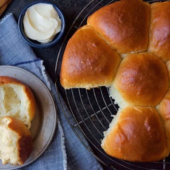

← All recipes
Japanese Milk Bread Rolls

Servings: 8 · Prep: 30 min · Cook: 30 min
Ingredients
- 3 tablespoons (43g) water
- 3 tablespoons (43g) milk, whole preferred
- 2 tablespoons (14g) King Arthur Unbleached Bread Flour
- 2 1/2 cups (300g) King Arthur Unbleached Bread Flour
- 2 tablespoons (14g) King Arthur Baker's Special Dry Milk or nonfat dry milk
- 1/4 cup (50g) granulated sugar
- 1 teaspoon (6g) table salt
- 1 tablespoon instant yeast
- 1/2 cup (113g) milk, whole preferred
- 1 large egg
- 4 tablespoons (57g) unsalted butter, melted
Directions
- Weigh your flour; or measure it by gently spooning it into a cup, then sweeping off any excess.
- To make the tangzhong: Combine all of the ingredients in a small saucepan, and whisk until no lumps remain.
- Place the saucepan over low heat, and cook the mixture, whisking constantly, until thick and the whisk leaves lines on the bottom of the pan, about 3 to 5 minutes.
- Transfer the tangzhong to a small mixing bowl or measuring cup and let it cool to room temperature.
- To make the dough: Combine the tangzhong with the remaining dough ingredients, then mix and knead — by hand, mixer, or bread machine — until a smooth, elastic dough forms.
- Shape the dough into a ball, and let it rest in a lightly greased covered bowl for 60 to 90 minutes, until puffy but not necessarily doubled in bulk.
- Gently deflate the dough, divide it into 8 equal pieces (for large rolls) or 10 equal pieces (for medium-sized rolls), and shape each piece into a ball.
- Place the rolls into a lightly greased 8" or 9" round cake pan. Cover the pan, and let the rolls rest for 40 to 50 minutes, until puffy.
- Preheat the oven to 350°F. Brush the rolls with milk or egg wash (1 large egg beaten with 1 tablespoon cold water), and bake for 25 to 30 minutes, until golden brown on top; a digital thermometer inserted into the center of the middle roll should read at least 190°F.
- Remove the rolls from the oven. Allow them to cool in the pan for 10 minutes, then transfer them to a rack to cool completely.
Original source: kingarthurbaking.com